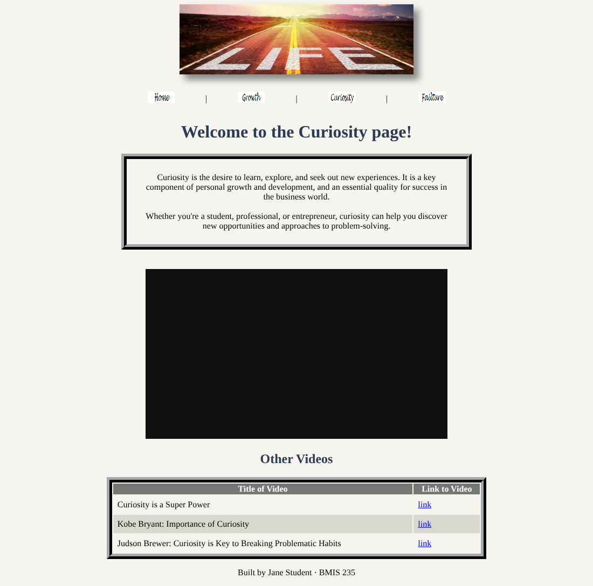

HTML-4
External CSS
Style a four-page site from one stylesheet, fix the menu bar, and add styles of your own.
Your starter files
They're already in your bmis235 repo, in the assignment4 folder. You copied them in Start here, so there's nothing to download.
Files: journey.html, growth.html, curiosity.html, failure.html, externalstyles.css, journey.jpg, home.gif, growth.GIF, curiosity.GIF, failure.GIF
Don't have a bmis235 repo yet? Do Start here first.
Three ways to add CSS
- External: one
.cssfile that every page links to. Change it once, every page changes. - Internal: a
<style>block at the top of one page. Overrides the external file for that page. - Inline: a
style="..."on one tag. Overrides both.
What to do
- Rename
journey.htmltoindex.html.1 pt - Update the Home link in the menu on every page to go to
index.html.2 pts - Fix all the images so the menu bar shows Home, Growth, Curiosity and Failure on every page.2 pts
- Fix the Failure page so it links to
externalstyles.csslike the other pages.1 pt - Research and add 5 new styles to
externalstyles.css. Commit each one separately with a message saying what it does.3 pts - Add two new videos or articles to the tables on the Curiosity and Failure pages.1 pt
Hints
- Your link shows a 404? A folder's link only loads if it has a file called
index.html. That's what task 1 fixes. - Renaming a file: open it, click the pencil, and change the name in the box at the top. Then commit.
- Images: the Home image works but the other three don't. Compare the file names in the folder to the names in the code, letter by letter. GitHub can't rename images in the browser, so fix it in the code.
- The Failure page: look at the
<head>of another page. One line is missing. - New styles: ideas include fonts, link hover colors, page background, heading colors and table padding. W3Schools CSS is a good place to look.
- New rows: copy an existing
<tr>...</tr>, paste it, and change it.
Make it yours
- Fill in the author comment at the top of every file with your name and GU username.
- Fill in
<meta name="author">with your name. - Fill in the footer: Built by YOUR NAME · BMIS 235.
- Make at least 3 commits with clear messages (not "Update index.html").
- Your 5 styles and your new videos. Your commit messages are how we see what you added.
Finished example

When you're stuck
- Say it in one sentence: "I expected ___, but I see ___."
- Pick one problem. Ignore the rest for now.
- Find the line. Which tag or file is it in?
- Search your one sentence (W3Schools, Google, YouTube).
- Change one thing, commit, check. Didn't work? Undo it and try the next idea.
"Nothing works" can't be searched. "My image shows a broken icon" can.
Submit
- Wait 1–2 minutes after your last commit.
- Open your live link and check that everything works:
https://YOUR-GITHUB-USERNAME.github.io/bmis235/assignment4/ - Paste that link into Canvas. In the Canvas text box, list the 5 styles you added.
Rubric
| Criteria | Pts |
|---|---|
| journey.html renamed to index.html | 1 |
| All menu links go to index.html | 2 |
| All images fixed, including the menu bar | 2 |
| Failure page links to the external CSS | 1 |
| 5 new external CSS styles (listed in Canvas) | 3 |
| Two new items in the Curiosity and Failure tables | 1 |
| Total | 10 |